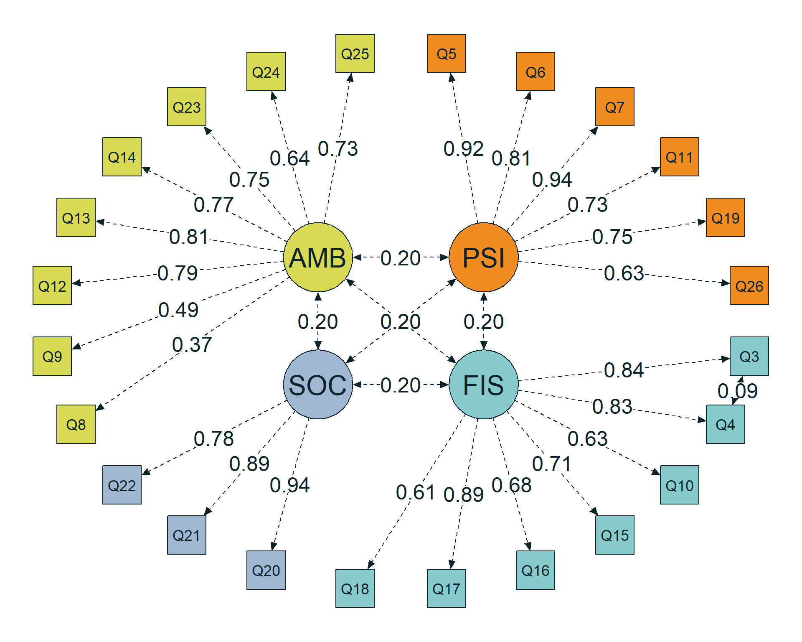
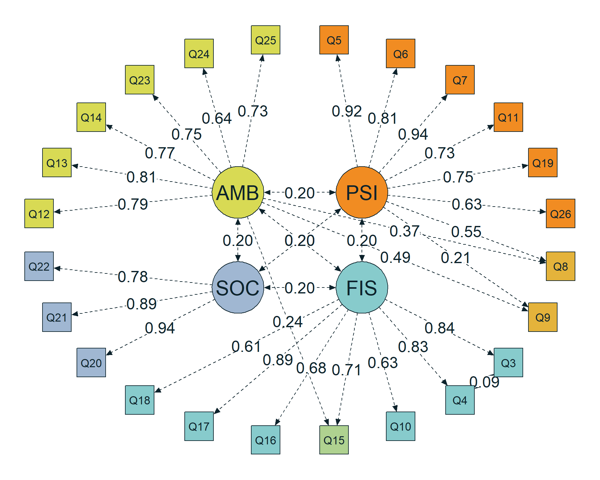

3 Seleção do modelo de medida
As análises desse artigo-tutorial seguem princípios de programação funcional e do Tidyverse Style Guide: funções pequenas e reutilizáveis, nomes em snake_case, uso do pipe nativo |> quando apropriado e separação entre computação e apresentação. Os .html e .pdf preservam o enredo científico, mas um callout de cada saída nos .html mostra o racional das chamadas responsáveis pela respectiva saída. Análises mais extensas serão mantidas em notebooks .qmd autônomos. Esses princípios orientam a organização do código. Para uma reprodutibilidade completa, é necessário baixar/clonar o projeto e executar as recomendações do README na raiz do projeto.
As especificações reutilizáveis nessa seção estão em models.R e as funções auxiliares em helpers.R, que são antecipadamentes chamadas no início da seção por:
Utilizamos como exemplo a World Health Organization Quality of Life – Abbreviated Version (WHOQOL-Bref), um instrumento de autorrelato amplamente empregado na avaliação da qualidade de vida em diferentes populações e contextos culturais (Lin & Yao, 2022; Mosqueira Taipe et al., 2026; Skevington & Epton, 2018). O instrumento contém 26 itens com cinco categorias de resposta. Os dois primeiros abordam a percepção geral da qualidade de vida e a satisfação com a saúde; os demais 24 compõem os domínios físico (FIS), psicológico (PSI), relações sociais (SOC) e ambiente (AMB).
A escolha da WHOQOL-Bref permite desenvolver a recomendação apresentada na Seção 2.1: partir de um instrumento com estrutura teórica definida e evidências psicométricas acumuladas, cujos itens admitam uma estratégia de análise com dados que podem ser considerados contínuos. A presença de cinco categorias de resposta oferece suporte inicial a essa estratégia, conforme a fundamentação anterior, e suas implicações serão examinadas na descrição dos itens (Seção 5.3) e na estimação robusta (Capítulo 6). O objetivo do exemplo é explicitar as decisões de uma AFC e suas justificativas, preservando o conteúdo e o formato de resposta do instrumento.
As sínteses da literatura sustentam a estrutura de quatro domínios, embora também indiquem que sua aplicação exige atenção às relações entre determinados itens. Lin & Yao (2022) integraram resultados de 16 estudos de análise fatorial exploratória e corroboram a solução de quatro fatores pela sua interpretabilidade e parcimônia. Nessa solução, Q8, referente à segurança na vida diária, apresentou relação mais forte com o domínio psicológico do que com o ambiental, ao qual pertence teoricamente. Esse resultado mostra que o suporte à organização geral em quatro fatores pode coexistir com relações entre itens e domínios que não correspondem a uma estrutura simples.
A revisão sistemática de Mosqueira Taipe et al. (2026) amplia essa discussão: dos 439 registros identificados, 36 estudos foram incluídos, e a estrutura de quatro fatores também foi identificada em 64% deles. A revisão sustenta a estrutura original, mas documenta modificações relacionadas a contextos culturais e clínicos, além de heterogeneidade nos procedimentos e no relato dos índices de ajuste. Portanto, esse conjunto de evidências justifica tomar os quatro domínios como ponto de partida e explicitar antecipadamente quais relações adicionais serão avaliadas.
Nesse sentido, a partir da leitura de Lin & Yao (2022), formulamos nosso modelo de análise primário, que inclui uma covariância residual entre Q3, sobre dor e desconforto, e Q4, sobre a necessidade de tratamento médico (Figura 3.1). Ambos pertencem ao domínio físico e são formulados em direção negativa à qualidade de vida. Sua proximidade de conteúdo e a formulação compartilhada tornam plausível uma associação que não seja inteiramente explicada pelo fator físico. Essa especificação também encontra precedente em estudos reunidos por Mosqueira Taipe et al. (2026). No contexto da discussão sobre Common Method Bias (CMB), tratamos essa covariância como uma hipótese de dependência local compatível com conteúdo ou método compartilhado.

A chamada usa o objeto popmodel, definido e documentado em models.R, e a função plot_color(), implementada em helpers.R. O objeto descreve a identificação, as cargas fatoriais e a covariância residual Q3–Q4; e a função controla a representação estrutural e as cores dessas relações. Após carregar os dois scripts conforme indicado no início da seção, a figura pode ser reproduzida com:
Código
plot_color(popmodel)O segundo modelo mantém a covariância residual Q3–Q4 e acrescenta três cargas cruzadas: Q8 e Q9 no domínio psicológico e Q15 no domínio ambiental (Figura 3.2). A seleção dessas relações é informada pela solução exploratória de quatro fatores apresentada na Tabela 3 de Lin & Yao (2022). A segurança percebida em Q8 e a avaliação do ambiente físico em Q9 podem compartilhar aspectos com o bem-estar psicológico, enquanto a mobilidade avaliada por Q15 pode envolver, além da capacidade física, condições ambientais. Essas interpretações constituem justificativas substantivas para testar as relações selecionadas; não são conclusões já estabelecidas para a amostra deste tutorial.
Preservamos as cargas de Q8 e Q9 no domínio ambiental e a de Q15 no domínio físico, acrescentando as relações propostas em vez de transferir os itens de domínio. Também não reproduzimos todas as cargas secundárias da solução exploratória de Lin & Yao (2022). O segundo modelo é uma especificação delimitada para este tutorial, apoiada naquela evidência e na interpretação do conteúdo dos itens, e não uma AFC anteriormente validada pelos autores com essa exata configuração.

A chamada usa o objeto h1model, definido e documentado no script models.R, e a função plot_color(), implementada no script helpers.R. O objeto acrescenta ao primeiro modelo as cargas cruzadas PSI → Q8, PSI → Q9 e AMB → Q15; a mesma função exibe as estimativas fixadas do modelo populacional. Após carregar os dois scripts conforme indicado no início da seção, a figura pode ser reproduzida com:
Código
plot_color(h1model)